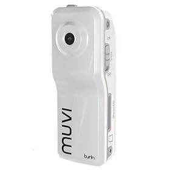

Challenge CLC have been extremely kind in funding this project and Bradford schools have been more then happy to write a review based on their experiences with the different cameras. My plan is to rotate the cameras between schools and classrooms to get multiple reviews on each camera.
We are buying 10 cameras and reviewing them over the next few weeks. Also thanks to @Raff31, @LordLangley73 and @DeerWood for their input. We will be using this document for suggestions on ways to use these cameras.
Our shortlist (of which we probably need to remove 1/2):
And a bit controversial:
* = Comes highly recommended
/ = Stunning design
+ = Built in memory (Enough to record video)
m = Special memory required
Which would you remove? Has anyone seen any info on an action video camera being used in a classroom before? Does this seem completely silly? I like Silly, do you?
Removing the first bunch..
Getting my list down was painfully difficult, I wanted to try as many cameras as possible but some where too expensive or not suitable and my budget is limited!
Here is are the camcorders I removed and reasons for removing them:
Total amount to spend is now only £1440 for cameras and £195 for memory cards! Bargain for 17 cameras! Now to see if we can get that level of funding! :)
{kind=link}